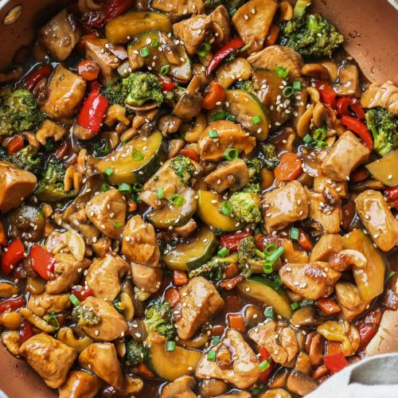

Stir Fry
Delicious stir fry you'll be able to save and enjoy for days

Ingredients
- 1 chicken breast
- 1 bell pepper
- 1/4 of a sweet or red onion
- Garlic
- 1 cup of carrots - sliced
- 1 cup portobello mushrooms - sliced
- Soy sauce
Instructions
- Add all veggies to a pan with olive oil and cook on medium heat
- Add ginger and salt/pepper
- Slice and season chicken
- Throw in chicken and soy sauce for it all to cook in
- Cook until chicken is thoroughly cooked - add spices/soy sauce to taste
- Optional: cook/heat up rice
- Enjoy!